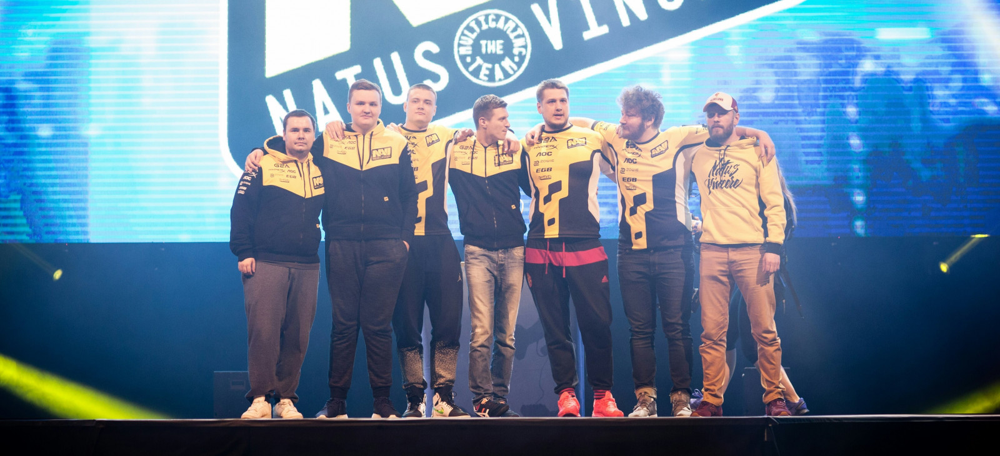
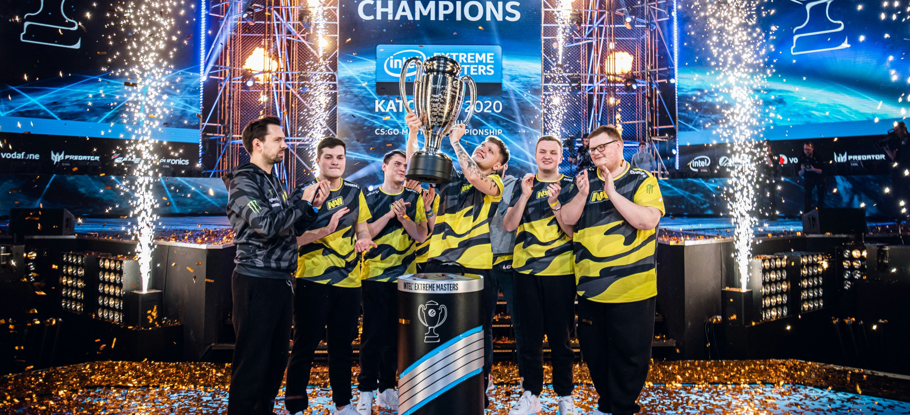
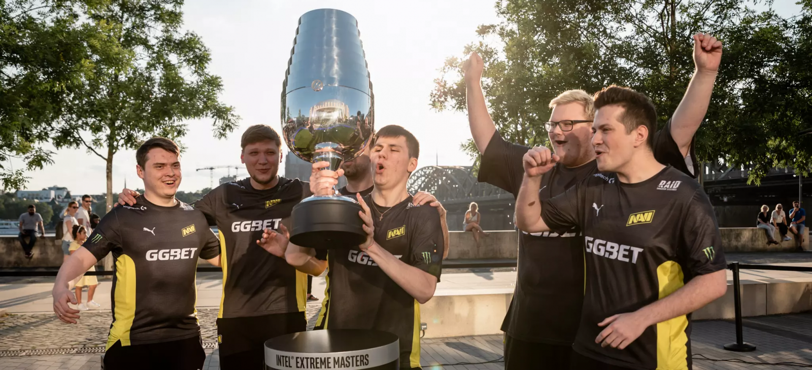
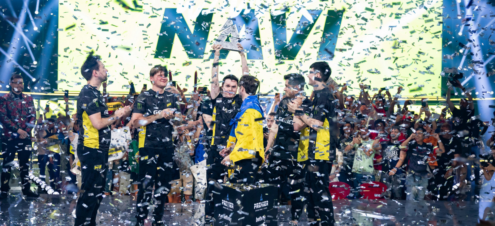
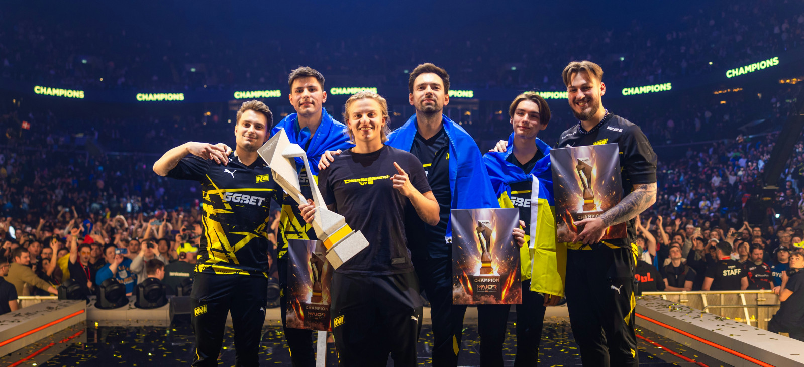

NAVI – первый клуб, который взял топ-1 с пятью разными составами
NAVI-2016: Edward, Zeus, GuardiaN, seized, flamie
С обновлением рейтинга от 18 апреля 2016 года Natus Vincere впервые вышла на первое место. В тот состав входили легендарные игроки Edward и Zeus, а также GuardiaN, seized, flamie – трио, которое стало важной частью истории клуба в эпоху CS:GO.
Заявку на топ-1 NAVI сделала еще в начале года, когда заняла второе место на крупном LAN-турнире SL i-League StarSeries XIV Finals, а затем еще и выиграла DreamHack ZOWIE Open Leipzig 2016 и Counter Pit League Season 2 Finals. В апреле команда становится финалистом мейджора MLG Columbus 2016, а выход в финал DreamHack Masters Malmö 2016 позволил набрать 966 очков, чего оказалось достаточно, чтобы опередить действующих чемпионов мира в лице Luminosity с 886 очками.

Удержать первенство "рожденным побеждать" удалось лишь три недели. 9 мая команду опережают бразильцы из Luminosity/SK, которые фактически начали свою эру и лишатся статус мирового лидера лишь 17 октября.
NAVI-2020: flamie, s1mple, electroNic, Boombl4, Perfecto
Спустя всего три месяца после первого триумфа NAVI заменяет Zeus на s1mple и в последующие годы полностью перестраивает ростер. Перед стартом первого сезона 2020 года в команду входят flamie, s1mple, electroNic, Boombl4 и Perfecto.
Большие перспективы состава после подписания Perfecto в январе стали понятны по итогу первых же турниров: в рамках "разминочного" LAN-турнира ICE Challenge 2020 коллектив занимает второе место, а последующие BLAST Premier Spring Series 2020 и IEM Katowice 2020 выигрывает. 9 марта рейтинг получает обновление, где NAVI имеет 853 очка, но и этого результата оказалось достаточно, чтобы выйти на первое место, обогнав Astralis.

После этого "рожденные побеждать" будут удерживать лидерство еще семь недель, но при этом не достигнут даже 900 из 1000 возможных очков. Позже данный состав еще несколько раз возьмет топ-1, но ненадолго, а всё дело в нестабильности про-сцены, которая на фоне пандемии коронавируса запомнится как "онлайн-эра".
NAVI-2021: s1mple, electroNic, Boombl4, Perfecto, b1t
Состав NAVI-2021 является, наверное, самым известным в современной истории NAVI. Именно замена flamie на b1t в апреле 2021 года стала началом победоносного шествия команды, которое с ностальгией вспоминают по сегодняшний день.
Первый же турнир после присоединения b1t, которым стал DreamHack Masters Spring 2021, украинский клуб выигрывает. За этим следуют успехи на BLAST Premier Spring Final 2021 (2 место) и StarLadder CIS RMR 2021 (1 место), а на первом LAN-турнире с b1t – IEM Cologne 2021 – NAVI демонстрирует полную доминацию и забирает чемпионский кубок без единого поражения.

19 июля "рожденные побеждать" закономерно поставлены на первое место в рейтинге с 965 очками в активе. До конца года команда выигрывает буквально все турниры мирового уровня, включая PGL Major Stockholm 2021, и теряет лидерство только в апреле 2022 года вместе с ухудшением результатов.
NAVI-2022: s1mple, electroNic, Perfecto, b1t, sdy
Вскоре после ухудшения результатов, а также пресловутых "репутационных рисков", NAVI решает расстаться с Boombl4. В июне коллектив пополнил sdy, с которым клуб не спешил заключать контракт, поскольку надеялся найти усиление, которое поможет вернуть результаты 2021 года.
Вместе со стендином "рожденные побеждать" тут же становятся чемпионами BLAST Premier Spring Final 2022, после чего выходят в финал IEM Cologne 2022, и в результате уже 11 июля возвращают себе мировое лидерство. Удержать первое место дольше одной недели в конкуренции с FaZe, которая в то время находилась в прайме, оказалось невозможным.

В конце августа благодаря победе на BLAST Premier Fall Groups 2022 состав с sdy вновь поднимется на первую строчку рейтинга, но через две недели так же уступит FaZe. В следующий раз NAVI взберется на вершину лишь спустя почти два года.
NAVI-2024: b1t, Aleksib, iM, jL, w0nderful
Для своих последующих успехов NAVI заложит фундамент в июне 2023 года, когда подпишет европейское трио Aleksib, jL и iM. Через четыре месяца также придет w0nderful, который заменит s1mple, изъявившего желание взять перерыв в выступлениях.
Первых высоких результатов новый состав украинского клуба достигнет лишь в начале следующего года: команда выиграла BLAST Premier Spring Groups 2024 и квалифицировалась на мейджор, а также вышла в плей-офф престижного IEM Katowice 2024. Но настоящий триумф настиг "рожденных побеждать" в рамках PGL Major Copenhagen 2024, где вопреки всем скептикам они подняли чемпионский кубок.

Тем не менее даже победа на первом мейджоре по CS2 не позволила NAVI прыгнуть с шестой строчки сразу на пьедестал для №1 мира. Коллектив закрепился на втором месте, а затем, ввиду нестабильных результатов, вернулся на границу топ-5.
Взобраться на вершину данному составу удалось лишь неделю назад, после победы на Esports World Cup 2024. Команда набрала 950 очков и таки взяла заветный топ-1, но как долго сможет NAVI удерживать лидерство – под знаком вопроса, ведь у них на хвосте амбициозные MOUZ и Team Spirit.